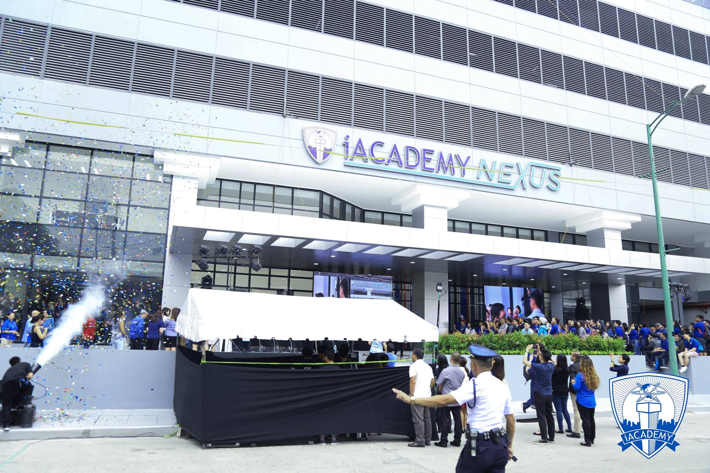
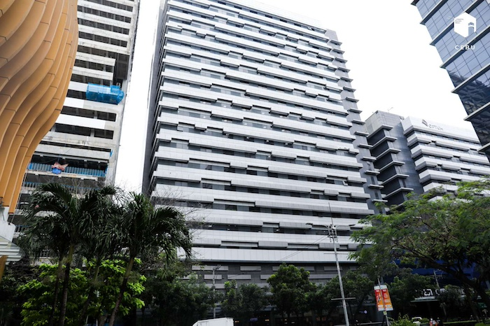

Makati Campus
iACADEMY’s first campus was along Ayala Avenue in Makati. It first offered College courses on Software Engineering, Network Engineering, e-Management, and Digital Arts. The school grew its course offerings. In 2007, iACADEMY was the first to offer BS Animation in the Philippines. As the College program offerings grew, the student population grew with it. By 2014, iACADEMY transferred to another building along Buendia Avenue in Makati. The school started offering Senior High School in 2016 and the student population has grown exponentially that by 2017 the school had to build a bigger, newer, even better space for learning. Hence, the iACADEMY Nexus along Yakal St. still in Makati, closer to partner companies where industry practitioners and professors for iACADEMY come from opened in 2018.
iACADEMY’s unique approach to education has gained traction and has been awarded IBM Center of Excellence in the ASEAN Region, UNITY training and certification center, PwC Accountancy school partner, Toon Boom Center of Excellence, Most Innovative School, among others. See full list of awards.
Cebu Campus
iACADEMY’s success in its Makati Campus has demanded expansion and the only way to grow is to bring the type of education that iACADEMY offers closer to people. In 2023, iACADEMY opened its first regional campus in Cebu IT Park. Its initial offerings are Software Engineering, Game Development, Real Estate Management, Animation, and Multimedia Arts and Design. Maintaining the same academic and facilities quality that its main campus offers, the unique Cebu campus design is filled with high-tech classrooms, multipurpose hall, Cintiq room, light box room, green room, multimedia laboratory, computer laboratories, and a very inviting student lounge.
